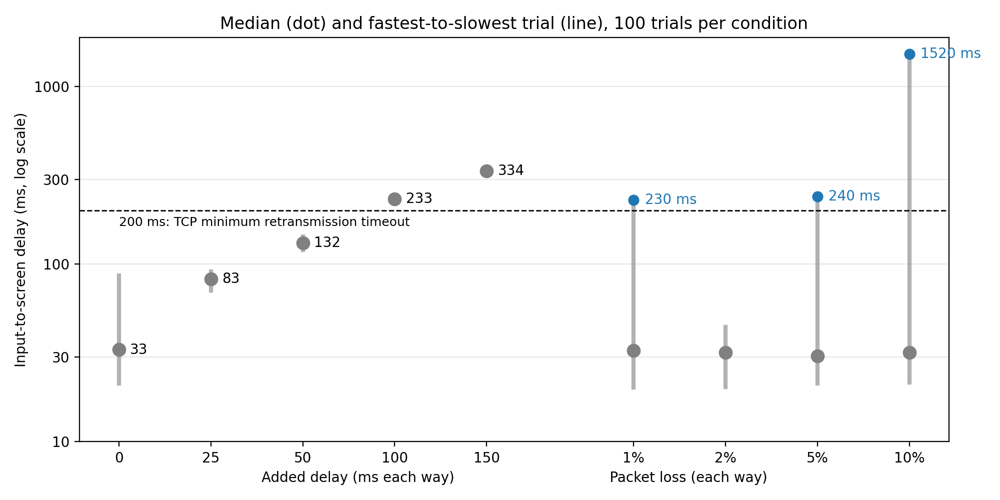
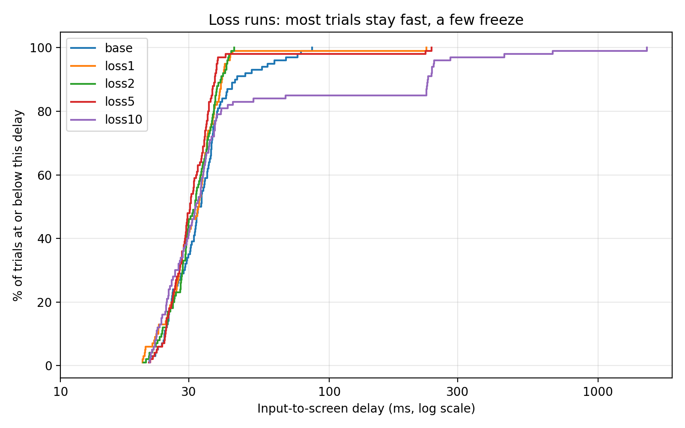

Summary
When a remote desktop feels slow, the cause could be distance (delay), a weak connection (packet loss), or both. This project separates those causes in a controlled testbed and measures what a user actually feels: the time between pressing a key and seeing the result on the screen.
VNC uses the RFB protocol over a single TCP connection. If one TCP segment is lost, the data behind it cannot be delivered to the application until the lost segment is retransmitted (head-of-line blocking). My hypothesis is that delay and loss hurt a remote desktop in different ways: delay makes every response later by about the same amount (steady lag), while loss leaves most responses fast but causes occasional long stalls (freezes).
Results so far (100 trials per condition)
- Added delay increased input delay by almost exactly the added round-trip time (+98 ms for 50 ms each way, +300 ms for 150 ms each way).
- Packet loss up to 10% left the median almost unchanged (30.4 to 32.8 ms, vs. 33.4 ms with no loss).
- Loss did cause stalls: the slowest trial was 230 ms at 1% loss, 240 ms at 5%, and 1520 ms at 10%, where at least 1 in 10 trials took 230 ms or more.
Setup
Everything runs on one Ubuntu system (WSL2). The VNC server and the client each run in their own Linux network namespace, connected by a virtual ethernet (veth) pair. tc netem is attached to both ends of the link, so both directions are affected: key events travel from the client to the server, and screen updates travel back.
netem only acts on packets leaving an interface, which is why it is applied on both ends. I checked this with ping: 100 ms on each end gave a round-trip time of 200.4 to 201.3 ms (mdev 0.4 ms), and 5% loss on each end gave 7.5% ping loss over 40 pings. The expected value is about 9.75% (1 − 0.95²), since either the request or the reply can be dropped.
Method
Measuring input delay
A small Tk app (flip.py) runs full screen in the remote desktop and flips a 100×100 pixel square between black and white on every key press. The measuring script (measure.py) runs in the client namespace and speaks RFB directly, so no viewer or desktop OS on the client side is involved in the timing. One trial:
- Send an RFB
KeyEvent(space pressed and released) and aFramebufferUpdateRequestfor a 10×10 patch inside the square, and start a timer. - The key event crosses the link; the server delivers it to
flip.py, which flips the square. - The server sends a
FramebufferUpdatefor the patch back across the link. - The script decodes the patch, sees the colour change, and stops the timer.
Both timestamps come from the same clock, so no clock synchronisation is needed. Some details:
- The client sets
TCP_NODELAYso small messages are sent immediately. - It requests 32-bit true colour and Raw encoding, so the patch colour can be read directly.
- The watched patch sits up and to the left of the screen centre, because the server draws the mouse pointer at the centre.
- The first 3 trials of every run are discarded as warm-up (the first packet after setup is slower because of the ARP lookup).
- There is a random 0.2 to 0.4 s pause between trials, and a trial times out after 10 s.
Calibration
With no added delay the median input delay was 31.3 ms. With 50 ms added each way it was 137.2 ms. The increase of 105.9 ms is close to the expected 100 ms, so the tool measures what it should.
Conditions
| Set | netem settings (each way) | Trials | Status |
|---|---|---|---|
| Delay | 0, 25, 50, 100, 150 ms | 100 each | Done |
| Loss | 1, 2, 5, 10% | 100 each | Done |
| Delay + loss | 25 ms with 1, 2, 5% loss | 100 each | Next |
| Matched pair | Loss vs. a delay with a similar median | 100 each | Next |
| Jitter, bandwidth | Smaller set from the original plan | If time allows |
Results so far
| Condition (each way) | Median (ms) | 90th percentile (ms) | Fastest (ms) | Slowest (ms) |
|---|---|---|---|---|
| No added delay or loss | 33.4 | 45.4 | 21.3 | 86.4 |
| Delay 25 ms | 82.6 | 88.1 | 71.0 | 90.9 |
| Delay 50 ms | 131.8 | 138.8 | 120.2 | 142.5 |
| Delay 100 ms | 232.7 | 240.2 | 220.4 | 243.8 |
| Delay 150 ms | 333.8 | 340.3 | 322.7 | 348.7 |
| Loss 1% | 32.8 | 40.0 | 20.2 | 229.6 |
| Loss 2% | 31.7 | 39.6 | 20.3 | 44.3 |
| Loss 5% | 30.4 | 37.5 | 21.3 | 240.1 |
| Loss 10% | 32.0 | 233.6 | 21.5 | 1520.4 |
Table 1. Input delay per condition, 100 trials each, from the sweep run on November 9.

Delay
Added delay shifted the whole distribution by almost exactly the added round-trip time: +49 ms for 25 ms each way, +98 ms for 50 ms, +199 ms for 100 ms and +300 ms for 150 ms (compared by median). With added delay, the gap between the fastest and slowest trial stayed between 20 and 26 ms. The no-delay baseline was wider (21 to 86 ms), so with delay added the responses were later but very consistent.

Loss
Packet loss barely moved the median, but it added stalls. The slowest trials at 1% and 5% loss (230 and 240 ms) are close to 200 ms, which is Linux TCP's minimum retransmission timeout (RTO) added on top of the normal response time. At 10% loss the 90th percentile was 234 ms, so at least 1 in 10 trials stalled, and the slowest trial took 1.52 s. That is consistent with the RTO doubling after repeated losses of the same data (exponential backoff), but I have not confirmed this with a packet capture yet.
There were fewer stalls than I expected at low loss, and none in the 2% run. My working guess is that with an almost-zero base RTT, Linux recovers many single losses quickly (for example through a tail loss probe), so only some losses fall back to the full RTO. The delay plus loss runs and a packet capture will test this.
Limitations
- The server and client share one machine and CPU. The no-delay baseline (median 33.4 ms) shows this floor, and every condition is compared against it.
- A veth pair with netem has no real Wi-Fi or router behaviour, so these results show the effect of delay and loss on their own.
- The time a viewer takes to draw the update on screen is not included. It is about the same under every network condition, so it does not affect the comparisons.
- The VNC server runs without a password (
-SecurityTypes None) to keep the measuring client simple. Port 5901 is only reachable inside the private namespaces. - Loss is random, so results vary between runs. Important conditions will be repeated.
Updates
- Nov 16 Posted the updated proposal with first results and the plan for the rest of the term.
- Nov 9 Calibrated the measurement tool and ran the delay and loss sweeps (100 trials per condition).
- Nov 8 Testbed working: namespaces, veth pair and netem checked with ping; VNC server and client connecting across the link. Started with plain VNC (TigerVNC) as the first system.
- October Posted the project proposal.
Next steps
- Delay plus loss runs, and a direct comparison of loss against a delay with a similar median.
- A packet capture during loss runs to confirm when stalls come from the RTO.
- A smaller jitter and bandwidth set.
- If time allows: a second system (RDP), or replaying a real Starlink latency trace.
Files and code
| Script | What it does |
|---|---|
| setup.sh | Builds the two namespaces and the veth pair, starts Xvnc and the Xfce desktop, and checks that the server answers |
| net.sh | Sets delay, loss, or both with netem on both ends of the link |
| flip.py | Full-screen app in the remote desktop that flips the square on each key press |
| measure.py | RFB client that measures input delay and saves one CSV per condition |
| sweep.sh | Runs every condition one after another |
| plot_results.py | Makes the graphs from the CSV files |
| viewer.sh | Opens a VNC viewer from the client namespace (optional, for watching) |
Reproducing the results
sudo ./setup.sh
sudo ip netns exec server sudo -u $USER env DISPLAY=127.0.0.1:1 python3 flip.py &
./sweep.sh 100
python3 plot_results.pyRaw results (one CSV per condition) are in the results folder of the repository.
References
- T. Richardson, Q. Stafford-Fraser, K. R. Wood, and A. Hopper, "Virtual Network Computing," IEEE Internet Computing, vol. 2, no. 1, 1998.
- A. M. Lai and J. Nieh, "On the Performance of Wide-Area Thin-Client Computing," ACM Transactions on Computer Systems, vol. 24, no. 2, 2006.
- N. Tolia, D. G. Andersen, and M. Satyanarayanan, "Quantifying Interactive User Experience on Thin Clients," IEEE Computer, vol. 39, no. 3, 2006.
- B. Staehle, A. Binzenhöfer, D. Schlosser, and B. Boder, "Quantifying the Influence of Network Conditions on the Service Quality Experienced by a Thin Client User," MMB 2008, Dortmund, Germany, 2008.
- Z. Meng et al., "Hairpin: Rethinking Packet Loss Recovery in Edge-based Interactive Video Streaming," USENIX NSDI 2024.
- tc-netem(8), Linux manual page, man7.org/linux/man-pages/man8/tc-netem.8.html